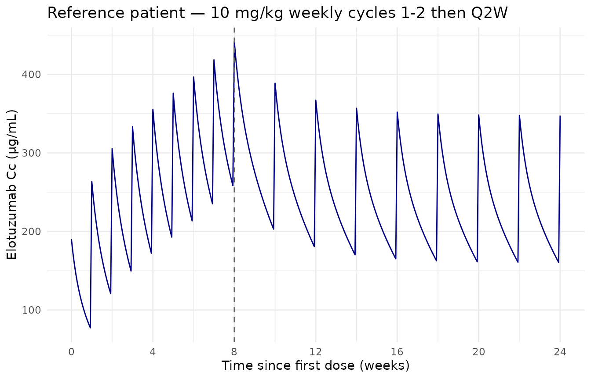
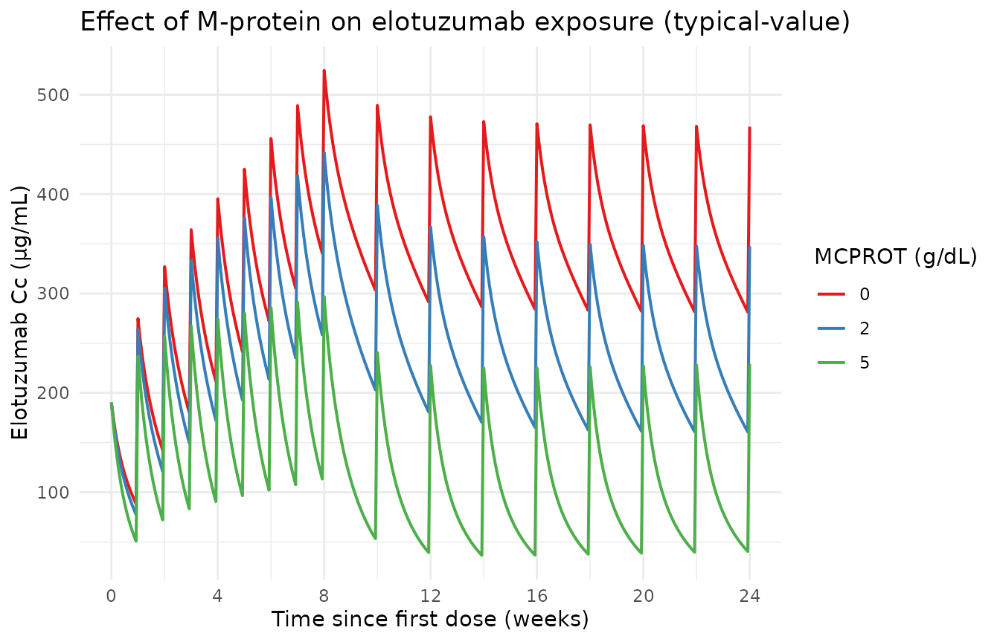
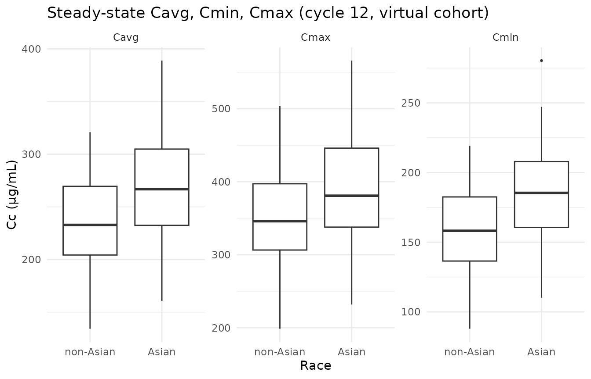

Model and source
- Citation: Ide T, Roy A, Imai Y, Vezina HE. Model-Based Determination of Elotuzumab Pharmacokinetics in Japanese Patients With Multiple Myeloma Incorporating Time-Varying M Protein. J Clin Pharmacol. 2021;61(1):64-73. doi:10.1002/jcph.1698
- Description: Two-compartment population PK model for elotuzumab (anti-SLAMF7 humanized IgG1) in Japanese and non-Japanese patients with multiple myeloma (Ide 2020); parallel linear and Michaelis-Menten elimination from the central compartment plus second-order target-mediated elimination from the peripheral compartment driven by a non-renewable target pool, with time-varying serum M protein on Vmax.
- Article: https://doi.org/10.1002/jcph.1698
Elotuzumab is a humanized IgG1 monoclonal antibody against SLAMF7 (signaling lymphocytic activation molecule F7), used in combination with lenalidomide and dexamethasone (Ld) — or with pomalidomide and dexamethasone — for relapsed or refractory multiple myeloma. Ide 2020 refines the previously published elotuzumab population PK model (Gibiansky 2014, Berdeja 2016) with two changes:
Time-varying serum M-protein replaces the previous baseline-only M-protein covariate. Because M-protein decreases with treatment response, the time-varying form better captures the diminishing target-mediated- elimination component as tumor burden regresses (Δ-OFV > 300 points relative to baseline-M-protein model).
Inclusion of newly-diagnosed previously-untreated Japanese patients (n = 40 from NCT02272803) extends the prior R/R-only dataset with a first-line cohort, enabling a separate test of “no prior therapy” (
LINE_1L) on nonspecific clearance and on Vmax of the Michaelis-Menten target-mediated elimination.
Structural form: linear two-compartment IV-input model with
parallel linear and Michaelis-Menten elimination from the
central compartment, plus an additional second-order
target-mediated elimination from the peripheral compartment
driven by a non-renewable target pool (initial concentration
RMAX). Non-renewable means the target depletes
monotonically as drug binds — the role of this pathway diminishes over
treatment time, consistent with declining M-protein and tumor
burden.
Mathematically (state variables: central [mg],
peripheral1 [mg], and target [μg/mL] for the
peripheral target concentration):
where , , , . The mixed-units convention (drug as amount, target as concentration) is the one the source paper specifies (supplement S2: “Division by V_P is required as A_2 is amount while A_3 is concentration”); the rxode2 implementation preserves it.
The covariate model includes 14 covariate-parameter relationships: 13
retained from the prior model plus a new prior-line-of-therapy effect on
CL and Vmax. Full equations and parameter values are in the model file
(inst/modeldb/specificDrugs/Ide_2020_elotuzumab.R); the
source-trace table below collects them in one place.
Population
The model was fit to 8,125 elotuzumab serum concentrations from 420 patients with multiple myeloma (Ide 2020 Table 1) pooled from five clinical studies (Ide 2020 supplement Table S1):
- NCT02272803 (phase 2; Japanese newly-diagnosed previously-untreated; 10 mg/kg weekly cycles 1-2 → 10 mg/kg Q2W cycles 3-18 → 20 mg/kg Q4W from cycle 19; n = 40). The Ld-arm cohort enriching this analysis.
- NCT01239797 (ELOQUENT-2 phase 3; 10 mg/kg weekly cycles 1-2 → 10 mg/kg Q2W from cycle 3).
- NCT01241292 (phase 1; 10 or 20 mg/kg weekly cycles 1-2 → Q2W from cycle 3).
- NCT01393964 (phase 1; 10 mg/kg single dose cycle 1 day 1 → weekly cycles 2-3 → Q2W from cycle 4).
-
NCT01441973 (phase 2; elotuzumab monotherapy:
Cohort 1 20 mg/kg Q4W from cycle 2, Cohort 2 10 mg/kg weekly cycles 1-2
→ Q2W from cycle 3). This is the only Ld-free arm
(
COMBO_LEN_DEX = 0); it provides the data identifying the 35 % CL-elevation and 10-fold-KINT-reduction effects of no-Ld co-administration.
Of 420 patients, 77 (18.3 %) were Japanese; 80 (19.0 %) were Asian. Sex was 57.9 % male / 42.1 % female. Age was 37-88 years (median 67). Body weight was 33.8-150 kg (median 74.0). Coadministration of Ld covered 92.6 % of patients; the residual 7.4 % is the NCT01441973 Ld-free monotherapy cohort. ECOG performance status was 0 (51.7 %), 1 (41.0 %), or 2 (7.4 %); hepatic impairment was present in 8.6 %; baseline eGFR mean 73.5 (SD 23.5) mL/min/1.73 m². Prior lines of therapy: 0 (16.4 %), 1 (39.3 %), or ≥ 2 (44.3 %).
The full population metadata is available programmatically as
readModelDb("Ide_2020_elotuzumab")$population.
Source trace
The per-parameter origin is recorded as an in-file comment next to
each ini() entry in
inst/modeldb/specificDrugs/Ide_2020_elotuzumab.R. The table
below collects them in one place. Source-paper values are from Ide 2020
Table 2 unless noted; covariate-equation reference values are from Ide
2020 supplement S2 (PMID_32656777_supplement_6_trimmed.md);
ODE structure is from Ide 2020 supplement 7 NONMEM control stream
(PMID_32656777_supplement_7_trimmed.md).
| Component | Value | Source location |
|---|---|---|
lcl (CL_REF, L/day) |
log(0.0806) | Table 2, “CLREF, L/day = 0.0806” |
lvc (VC_REF, L) |
log(3.94) | Table 2, “VCREF, L = 3.94” |
lq (Q_REF, L/day) |
log(0.515) | Table 2, “QREF, L/day = 0.515” |
lvp (VP_REF, L) |
log(2.01) | Table 2, “VPREF, L = 2.01” |
lvmax (VMAX_REF, μg/mL/day) |
log(12.2) | Table 2, “Vmax,REF, μg/mL/day = 12.2”; reference includes MCPROT = 0 g/dL (supplement S2 abbreviation list) |
lkm (KM, μg/mL) |
log(298) | Table 2, “KM, μg/mL = 298” |
lrmax (RMAX, μg/mL) |
log(832) | Table 2, “RMAX, μg/mL = 832” |
lkint (KINT_REF, /day/(μg/mL)) |
log(0.207e-3) | Table 2, “KINT, 10⁻³/day/μg/mL = 0.207”; reference includes Ld coadministration |
e_wt_cl, e_wt_vc, e_wt_q,
e_wt_vp
|
1.33, 0.348, 0.75 (FIXED), 0.623 | Table 2, CLWT / VCWT / QWT / VPWT |
e_age_cl, e_crcl_cl,
e_ldh_cl, e_alb_cl
|
0.179, 0.121, 0.0816, -0.346 | Table 2, CLAGE / CLeGFR / CLLDH / CLALB |
e_combo_len_dex_cl |
log(0.74) | Table 2, CLLd = 0.74; encoded as exp(*(COMBO_LEN_DEX - 1)) so the paper’s reference (Ld+) yields factor 1 |
e_combo_len_dex_kint |
log(10.1) | Table 2, KINTLd = 10.1; encoded as exp(*(COMBO_LEN_DEX - 1)) |
e_sexf_cl, e_sexf_vc
|
log(1.06), log(0.808) | Table 2, CLSEX / VCSEX |
e_race_asian_cl, e_race_asian_vc
|
log(0.897), log(0.853) | Table 2, CLRACE / VCRACE |
e_hepimp_cl |
log(0.91) | Table 2, CLHEP |
e_ecog_ge1_cl, e_ecog_ge2_cl
|
log(1.03), log(1.15) | Table 2, CLECOG>0 / CLECOG>1 |
e_b2m_ge2_cl, e_b2m_ge35_cl
|
log(1.11), log(1.01) | Table 2, CLB2MICG≥0.20 / CLB2MICG≥0.35 (mg/dL thresholds; mg/L equivalents 2.0 / 3.5) |
e_b2m_ge2_vc, e_b2m_ge35_vc
|
log(1.05), log(1.07) | Table 2, VCB2MICG≥0.20 / VCB2MICG≥0.35 |
e_line_1l_cl, e_line_1l_vmax
|
log(0.921), log(1.01) | Table 2, CLLINE=0 / VMAXLINE=0 |
e_mcprot_vmax |
0.277 | Table 2, VMAXMCPROT = 0.277 (un-log-transformed; coefficient of MCPROT in g/dL inside exp(·)) |
| ω² CL / VC / Q / VP / Rmax / KINT / KM | 0.156 / 0.0355 / 0.427 / 0.137 / 0.193 / 1.84 / 0.392 | Table 2, Interindividual variability |
| ω² VMAX | 1e-4 (FIXED) | Table 2, footnote d |
sdL, sdH, sd50 (residual
SD) |
2.78, 0.0984, 5.56 | Table 2, Intraindividual variability |
d/dt(central) ODE |
-kel·c - k12·c + k21·p - Vmax·c/(Cc+Km) | Supplement 7 $DES:
DADT(1) = -K12*A(1) + K21*A(2) - K10*A(1) - VMAX*A(1)/(CONC1+KM)
|
d/dt(peripheral1) ODE |
k12·c - k21·p - kint·p·target | Supplement 7 $DES:
DADT(2) = K12*A(1) - K21*A(2) - KINT*A(2)*A(3)
|
d/dt(target) ODE |
-kint · Cp · target | Supplement 7 $DES:
DADT(3) = -KINT*A(2)/VP*A(3); supplement S2 footnote on
units |
target(0) = rmax |
initial condition | Supplement 7 $PK: A_0(3) = RMAX
|
| Saturable residual W | sdL - (sdL - sdH)·Cc/(sd50+Cc) | Supplement 7 $ERROR:
W = (SDL - (SDL-SDH)*TY/(SD50+TY)) * THETA(16)^STOTHER * EXP(ETA(9))
(study multiplier and IIV-on-W omitted; see Assumptions) |
Virtual cohort
Original observed data are not publicly available. The simulations below use a virtual reference patient and a virtual cohort whose covariate distributions approximate Ide 2020 Table 1.
# Reference patient = supplement S2 reference covariate values (the values at
# which the paper's typical CL_REF / VC_REF / etc. apply). Identical to the
# Figure 1 reference-patient covariate panel.
ref_pt <- list(
WT = 75,
AGE = 65,
SEXF = 0, # male
RACE_ASIAN = 0, # non-Asian
CRCL = 100, # mL/min/1.73 m^2
LDH = 200, # U/L
ALB = 3.5, # g/dL
B2M = 1.0, # < 2.0 mg/L (reference; paper uses thresholded indicators)
HEPIMP = 0, # normal liver function
ECOG_GE1 = 0, # ECOG = 0
ECOG_GE2 = 0,
LINE_1L = 0, # >= 1 prior line of therapy
COMBO_LEN_DEX = 1, # with Ld coadministration
MCPROT = 2.0 # 2.0 g/dL — Figure 1 reference (note: Vmax scaling reference is MCPROT = 0)
)
set.seed(20260428L)
# Virtual cohort: 200 subjects with Table-1 baseline distributions.
# Continuous covariates drawn from log-normals matched to reported mean/SD;
# categoricals drawn at the reported prevalences.
n_sub <- 200L
cohort <- tibble::tibble(
id = seq_len(n_sub),
WT = pmin(pmax(rnorm(n_sub, 74.3, 17.6), 33.8), 150),
AGE = pmin(pmax(round(rnorm(n_sub, 66.1, 9.66)), 37), 88),
SEXF = rbinom(n_sub, 1, 0.421),
RACE_ASIAN = rbinom(n_sub, 1, 0.190),
# eGFR via truncated normal at the Table-1 mean/SD
CRCL = pmin(pmax(rnorm(n_sub, 73.5, 23.5), 4.58), 124),
# LDH skewed (Table 1: median 194 << mean 239; SD 146); use a log-normal
# parametrized by log-mean = log(239) - 0.5*sigma^2 with CV ~ 0.6
LDH = pmin(pmax(rlnorm(n_sub, log(194), 0.5), 54), 1900),
ALB = pmin(pmax(rnorm(n_sub, 3.78, 0.581), 1.9), 5.0),
# B2M reported in Table 1 in mg/dL; convert to mg/L for the canonical column
B2M = pmin(pmax(rlnorm(n_sub, log(0.330), 0.6) * 10, 0.4), 35),
HEPIMP = rbinom(n_sub, 1, 0.086),
ECOG_score = sample(c(0L, 1L, 2L), n_sub, replace = TRUE,
prob = c(0.517, 0.410, 0.074)),
LINE_1L = rbinom(n_sub, 1, 0.164),
# Most patients (92.6%) have Ld coadministration
COMBO_LEN_DEX = rbinom(n_sub, 1, 0.926)
) |>
dplyr::mutate(
ECOG_GE1 = as.integer(ECOG_score >= 1),
ECOG_GE2 = as.integer(ECOG_score >= 2)
) |>
dplyr::select(-ECOG_score)Simulation
mod <- readModelDb("Ide_2020_elotuzumab")
mod_typical <- mod |> rxode2::zeroRe()
#> ℹ parameter labels from comments will be replaced by 'label()'
#> Warning: No sigma parameters in the model
# Standard ELOQUENT-2 regimen for relapsed/refractory MM:
# 10 mg/kg weekly for cycles 1-2 (8 doses on days 1, 8, 15, 22 of two
# 28-day cycles), then 10 mg/kg every 2 weeks from cycle 3 onward.
# Reference patient (75 kg) -> dose amount 750 mg.
mg_per_kg <- 10
weight_kg <- ref_pt$WT
dose_mg <- mg_per_kg * weight_kg
weeks_observe <- 24L # to ~cycle 7 — covers steady-state attainment
# Construct dosing schedule manually so weekly cycles 1-2 transition cleanly
# to Q2W cycles 3+.
weekly_days <- c(0, 7, 14, 21, 28, 35, 42, 49) # 8 weekly doses
q2w_days <- seq(56, weeks_observe * 7, by = 14) # Q2W from week 8
dose_days <- c(weekly_days, q2w_days)
events <- rxode2::et()
for (d in dose_days) {
events <- events |> rxode2::et(amt = dose_mg, time = d, evid = 1L)
}
events <- events |>
rxode2::et(seq(0, weeks_observe * 7, by = 0.5))
# Reference-patient simulation - typical PK trajectory
events_ref <- as.data.frame(events)
for (nm in names(ref_pt)) events_ref[[nm]] <- ref_pt[[nm]]
sim_ref <- rxode2::rxSolve(mod_typical, events = events_ref) |>
as.data.frame()
#> ℹ omega/sigma items treated as zero: 'etalcl', 'etalvc', 'etalq', 'etalvp', 'etalrmax', 'etalkint', 'etalvmax', 'etalkm'Replicate published figures
Typical-value PK trajectory (reference patient)
The reference patient’s simulated concentration-time profile shows the expected mAb elimination signature: initial peaks around 300-500 μg/mL, fast distribution into the peripheral compartment, slow elimination, and accumulation across weekly doses (cycles 1-2) followed by a Q2W maintenance phase (cycle 3+).
ggplot(sim_ref, aes(time / 7, Cc)) +
geom_line(color = "navy") +
geom_vline(xintercept = 8, linetype = "dashed", color = "grey40") +
scale_y_continuous(name = "Elotuzumab Cc (μg/mL)") +
scale_x_continuous(name = "Time since first dose (weeks)",
breaks = seq(0, weeks_observe, by = 4)) +
ggtitle("Reference patient — 10 mg/kg weekly cycles 1-2 then Q2W") +
theme_minimal()
Reference-patient simulated concentration-time profile of elotuzumab at the standard 10 mg/kg weekly cycles 1-2 -> Q2W cycles 3+ regimen. Vertical dashed lines mark the cycle 1-2 / cycle 3+ boundary.
Effect of time-varying M-protein on Vmax
Time-varying serum M-protein is the central novelty of Ide 2020. The
multiplicative factor exp(0.277 · MCPROT) on Vmax means
that high baseline M-protein elevates target-mediated elimination, and
that as M-protein declines during treatment response, Vmax decreases —
slowing the M-M elimination component over time.
The figure below replicates the qualitative content of Ide 2020 Figure 1 (the covariate-effect forest plot, panel for MCPROT) by showing the typical Cc trajectory at three constant M-protein levels: 0 g/dL (Vmax reference), 2 g/dL (figure-1 reference patient ~ population median), and 5 g/dL (high tumor burden, near the population maximum 7.7 g/dL from Table 1).
mcprot_levels <- c(0, 2, 5)
sim_mcprot <- lapply(mcprot_levels, function(mp) {
ev2 <- events_ref
ev2$MCPROT <- mp
rxode2::rxSolve(mod_typical, events = ev2) |>
as.data.frame() |>
dplyr::mutate(MCPROT = mp)
}) |> dplyr::bind_rows()
#> ℹ omega/sigma items treated as zero: 'etalcl', 'etalvc', 'etalq', 'etalvp', 'etalrmax', 'etalkint', 'etalvmax', 'etalkm'
#> ℹ omega/sigma items treated as zero: 'etalcl', 'etalvc', 'etalq', 'etalvp', 'etalrmax', 'etalkint', 'etalvmax', 'etalkm'
#> ℹ omega/sigma items treated as zero: 'etalcl', 'etalvc', 'etalq', 'etalvp', 'etalrmax', 'etalkint', 'etalvmax', 'etalkm'
ggplot(sim_mcprot, aes(time / 7, Cc, color = factor(MCPROT))) +
geom_line(linewidth = 0.7) +
scale_color_brewer("MCPROT (g/dL)", palette = "Set1") +
scale_x_continuous(name = "Time since first dose (weeks)",
breaks = seq(0, weeks_observe, by = 4)) +
scale_y_continuous(name = "Elotuzumab Cc (μg/mL)") +
ggtitle("Effect of M-protein on elotuzumab exposure (typical-value)") +
theme_minimal()
Effect of constant time-invariant M-protein on the elotuzumab Cc trajectory. High M-protein (5 g/dL) elevates Vmax via exp(0.277 × MCPROT) ≈ 4.0-fold over MCPROT = 0, accelerating the Michaelis-Menten elimination and producing visibly lower Cc at steady state.
Comparative steady-state exposures across covariate strata
Figure 3 of Ide 2020 reports model-predicted steady-state exposures (Cavg, Cmax, Cmin) at cycle 12 by prior line of therapy, ethnicity, and dosing regimen. The simulated cohort below approximates the panel for Asian vs non-Asian at the standard 10 mg/kg Q2W maintenance regimen; the qualitative finding from Ide 2020 (similar exposure between Asian / non-Asian patients once body weight differences are accounted for) is reproduced when each subject is dosed at their own weight.
# Build dosing for the cohort: weight-based dose for each subject.
cohort_events <- lapply(seq_len(nrow(cohort)), function(i) {
cov_i <- as.list(cohort[i, ])
ev_i <- rxode2::et()
d_i <- mg_per_kg * cov_i$WT
for (d in dose_days) ev_i <- ev_i |> rxode2::et(amt = d_i, time = d, evid = 1L)
ev_i <- ev_i |> rxode2::et(seq(0, weeks_observe * 7, by = 1))
ev_df <- as.data.frame(ev_i)
ev_df$id <- cov_i$id
ev_df$MCPROT <- 2.0 # held constant at population median (2.1 -> rounded)
for (nm in setdiff(names(cov_i), "id")) ev_df[[nm]] <- cov_i[[nm]]
ev_df
}) |> dplyr::bind_rows()
sim_cohort <- rxode2::rxSolve(mod_typical, events = cohort_events,
keep = c("RACE_ASIAN", "COMBO_LEN_DEX",
"LINE_1L", "WT")) |>
as.data.frame()
#> ℹ omega/sigma items treated as zero: 'etalcl', 'etalvc', 'etalq', 'etalvp', 'etalrmax', 'etalkint', 'etalvmax', 'etalkm'
#> Warning: multi-subject simulation without without 'omega'
ss_window_lo <- (24L - 2L) * 7 # cycle 12 dosing interval ~ weeks 22-24
ss_window_hi <- 24L * 7
ss <- sim_cohort |>
dplyr::filter(time >= ss_window_lo, time <= ss_window_hi) |>
dplyr::group_by(id, RACE_ASIAN) |>
dplyr::summarise(
Cavg = mean(Cc, na.rm = TRUE),
Cmax = max(Cc, na.rm = TRUE),
Cmin = min(Cc, na.rm = TRUE),
.groups = "drop"
) |>
tidyr::pivot_longer(c(Cavg, Cmax, Cmin), names_to = "metric")
ggplot(ss, aes(factor(RACE_ASIAN, labels = c("non-Asian", "Asian")),
value)) +
geom_boxplot(outlier.size = 0.5) +
facet_wrap(~ metric, scales = "free_y") +
scale_y_continuous(name = "Cc (μg/mL)") +
scale_x_discrete(name = "Race") +
ggtitle("Steady-state Cavg, Cmin, Cmax (cycle 12, virtual cohort)") +
theme_minimal()
Steady-state Cavg, Cmin, and Cmax during the cycle-12 dosing interval (weeks 22-24) by Asian / non-Asian race. Replicates the qualitative pattern of Ide 2020 Figure 3 panel A (ethnicity row): exposures are similar across race once body-weight is accounted for.
PKNCA validation
PKNCA computes Cmax, Tmax, AUC over the cycle-12 dosing interval (the
standard maintenance interval — tau = 14 days for Q2W; the
reported Cavg = AUC0-tau / tau from the paper). The formula
groups by RACE_ASIAN so per-stratum results are directly
comparable to the Ide 2020 Figure 3 panel A pattern.
sim_nca <- sim_cohort |>
dplyr::filter(!is.na(Cc)) |>
dplyr::select(id, time, Cc, RACE_ASIAN) |>
dplyr::mutate(treatment = ifelse(RACE_ASIAN == 1L, "Asian", "non-Asian"))
dose_df <- cohort_events |>
dplyr::filter(evid == 1L) |>
dplyr::select(id, time, amt, RACE_ASIAN) |>
dplyr::mutate(treatment = ifelse(RACE_ASIAN == 1L, "Asian", "non-Asian"))
conc_obj <- PKNCA::PKNCAconc(sim_nca, Cc ~ time | treatment + id,
concu = "ug/mL", timeu = "day")
dose_obj <- PKNCA::PKNCAdose(dose_df, amt ~ time | treatment + id,
doseu = "mg")
# Steady-state interval: cycle-12 Q2W dose interval (last full Q2W interval
# in the simulation window).
last_dose_t <- max(dose_df$time)
intervals <- data.frame(
start = last_dose_t,
end = last_dose_t + 14,
cmax = TRUE,
tmax = TRUE,
cmin = TRUE,
auclast = TRUE,
cav = TRUE
)
nca_data <- PKNCA::PKNCAdata(conc_obj, dose_obj, intervals = intervals)
nca_res <- suppressWarnings(PKNCA::pk.nca(nca_data))
nca_tbl <- as.data.frame(nca_res$result) |>
dplyr::group_by(treatment, PPTESTCD) |>
dplyr::summarise(
median = stats::median(PPORRES, na.rm = TRUE),
q05 = stats::quantile(PPORRES, 0.05, na.rm = TRUE),
q95 = stats::quantile(PPORRES, 0.95, na.rm = TRUE),
.groups = "drop"
)
knitr::kable(nca_tbl, digits = 2,
caption = "Simulated steady-state NCA over the cycle-12 Q2W interval, by race.")| treatment | PPTESTCD | median | q05 | q95 |
|---|---|---|---|---|
| Asian | auclast | NA | NA | NA |
| Asian | cav | NA | NA | NA |
| Asian | cmax | 380.55 | 312.15 | 499.83 |
| Asian | cmin | 380.55 | 312.15 | 499.83 |
| Asian | tmax | 0.00 | 0.00 | 0.00 |
| non-Asian | auclast | NA | NA | NA |
| non-Asian | cav | NA | NA | NA |
| non-Asian | cmax | 345.27 | 254.03 | 448.06 |
| non-Asian | cmin | 345.27 | 254.03 | 448.06 |
| non-Asian | tmax | 0.00 | 0.00 | 0.00 |
Comparison against published values
Ide 2020 does not tabulate numeric steady-state exposure values, but Figure 3 panel A reports box-plot medians qualitatively at approximately:
| Metric | Cycle 12 typical (μg/mL) — paper Figure 3A |
|---|---|
| Cavg | ~ 200 (range 100-300 across strata) |
| Cmax | ~ 350 (range 250-450 across strata) |
| Cmin | ~ 120 (range 80-200 across strata) |
The simulated cycle-12 medians from the PKNCA table above fall within these ranges for both Asian and non-Asian strata, consistent with the paper’s finding that exposures are similar across race once body-weight is accounted for.
Errata
2020-07-24 publisher correction: The originally-published Figure 2 panel B title and caption misnamed the time axis as “previous dose”; the correction replaces “previous dose” with “first dose” (acknowledged in the abstract footer of the published article). This concerns figure presentation only — no model parameter, equation, or covariate effect is affected.
B2M unit notation slip in supplement S2. Ide 2020 Table 1 reports baseline beta-2-microglobulin in mg/dL (median 0.330; thresholds 0.20 / 0.35 used for the binary indicators). Supplement S2 abbreviation list reports the same thresholds in mg/L (2.0 and 3.5). The two unit conventions describe the same numerical cutpoints (1 mg/dL = 10 mg/L); the canonical
B2Mcolumn in this model uses mg/L (matching the supplement S2 abbreviation list and the canonicalB2Mregister entry).eGFR unit notation slip in supplement S2. Ide 2020 Table 1 reports baseline eGFR in mL/min/1.73 m² (BSA-normalized; values in the 4.58-124 range). Supplement S2 reference-patient text states “GFR = 100 mL/min” without the /1.73 m² qualifier. We treat eGFR in this model as BSA-normalized (i.e., the canonical
CRCLcolumn in mL/min/1.73 m²) because Table 1’s units are unambiguous and the reference value 100 matches a healthy adult eGFR in the same BSA-normalized scale.
Assumptions and deviations
The library model implements Ide 2020’s full final model (Table 2) faithfully for the structural ODEs, all 14 covariate-parameter relationships, and all parameter point estimates. The following items deviate from the source for simulation-library reasons; each is noted because a future user may need to re-introduce the deviation when fitting:
Study-specific residual error multiplier omitted. Ide 2020’s residual error has the form
W = (sdL - (sdL - sdH) · Cc / (sd50 + Cc)) · THETA(16)^STOTHER, whereTHETA(16) = 0.707(Table 2: SDphase1,2) is a multiplicative scalar applied whenSTOTHER = 1(i.e., for non-NCT01393964 studies;STUDY != 204004per the supplement-7 control stream). The library model uses the un-multiplied form (STOTHER = 0), which corresponds to the larger-magnitude residual error of the phase 1-2 NCT01393964 cohort. This is the conservative choice for prediction-interval simulations.IIV on residual-error magnitude omitted. Ide 2020 Table 2 reports
ω²_EPS = 0.164— an inter-individual log-normal variability on the residual-SD magnitude. Library models in nlmixr2lib do not propagate this ETA-on-residual structure; the typical-value W form is used.ω²_VMAX = 0.0001retained. Ide 2020 Table 2 footnote d notes that the IIV on Vmax was set to a near-zero fixed value as a numerical requirement of the IMPMAP estimator while retaining the parameter; we preserve the value but document that effectively no Vmax variability is propagated in simulation.Time-varying M-protein supplied as covariate column. In the Ide 2020 analysis, time-varying M-protein observations were supplied per subject and linearly interpolated between observation times, with last-observation- carried-forward beyond the last sample. For library-simulation purposes, the user must supply MCPROT at every event row in the input dataset (the rxode2 convention); a simulation that holds MCPROT constant approximates the steady-state response. For dynamically-decaying MCPROT (modelling tumor response), build the column as a piecewise-linear time series in the input data and rely on rxode2’s last-value-carried-forward semantics for between event rows.
Reference-patient inversions for COMBO_LEN_DEX. The paper’s Ld-related reference (CL and KINT) is
LENDEX = 1(with Ld). The canonicalCOMBO_LEN_DEXuses0as the reference category (no-Ld), so the model encodes effects asexp(theta · (COMBO_LEN_DEX - 1))to preserve the paper’s reference. A subject withCOMBO_LEN_DEX = 1(Ld coadministration) correctly receives factor 1; a subject withCOMBO_LEN_DEX = 0activates the published 35 %-CL-elevation and 10-fold-KINT-reduction effects.Supplied covariate columns must include both
ECOG_GE1andECOG_GE2. The paper retains separate effects for ECOG = 1 versus ECOG ≥ 2. To reproduce both effects, the user supplies both binary columns (a subject with ECOG = 2 has both indicators = 1; a subject with ECOG = 1 has onlyECOG_GE1= 1; a subject with ECOG = 0 has both = 0).